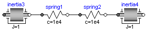
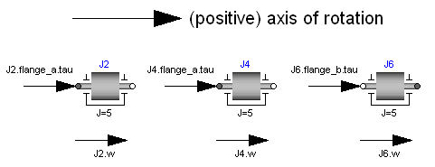
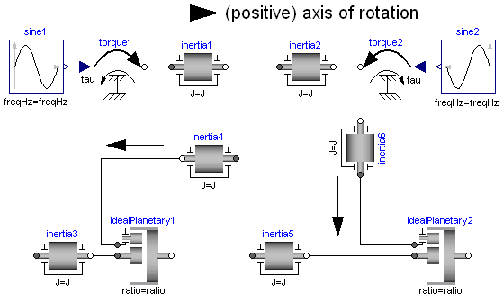
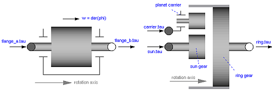
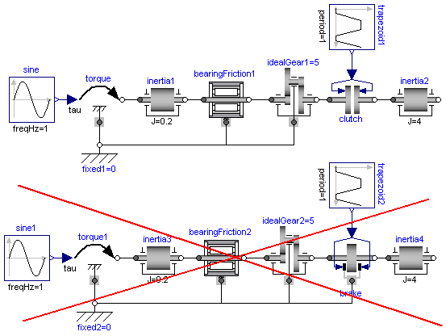

Modelica.Mechanics.Rotational.UsersGuide
Modelica.Mechanics.Rotational.UsersGuide
Modelica.Mechanics.Rotational.UsersGuide
Modelica.Mechanics.Rotational.UsersGuide
Library Rotational is a free Modelica package providing 1-dimensional, rotational mechanical components to model in a convenient way drive trains with frictional losses.
Extends from Modelica.Icons.Information (Icon for general information packages).
| Name | Description |
|---|---|
| Overview | |
| Flange Connectors | |
| Support Torques | |
| Sign Conventions | |
| User Defined Components | |
| Requirements for Simulation Tools | |
| State Selection | |
| Contact |
Modelica.Mechanics.Rotational.UsersGuide.OverviewThis package contains components to model 1-dimensional rotational mechanical systems, including different types of gearboxes, shafts with inertia, external torques, spring/damper elements, frictional elements, backlash, elements to measure angle, angular velocity, angular acceleration and the cut-torque of a flange. In sublibrary Examples several examples are present to demonstrate the usage of the elements. Just open the corresponding example model and simulate the model according to the provided description.
A unique feature of this library is the component-oriented modeling of Coulomb friction elements, such as friction in bearings, clutches, brakes, and gear efficiency. Even (dynamically) coupled friction elements, e.g., as in automatic gearboxes, can be handled without introducing stiffness which leads to fast simulations. The underlying theory is new and is based on the solution of mixed continuous/discrete systems of equations, i.e., equations where the unknowns are of type Real, Integer or Boolean. Provided appropriate numerical algorithms for the solution of such types of systems are available in the simulation tool, the simulation of (dynamically) coupled friction elements of this library is efficient and reliable.

A simple example of the usage of this library is given in the
figure above. This drive consists of a shaft with inertia J1=0.2 which
is connected via an ideal gearbox with gear ratio=5 to a second shaft
with inertia J2=5. The left shaft is driven via an external,
sinusoidal torque.
The filled and non-filled grey squares at the left and
right side of a component represent mechanical flanges.
Drawing a line between such squares means that the corresponding
flanges are rigidly attached to each other.
By convention in this library, the connector characterized as a
filled grey square is called flange_a and placed at the
left side of the component in the "design view" and the connector
characterized as a non-filled grey square is called flange_b
and placed at the right side of the component in the "design view".
The two connectors are completely identical, with the only
exception that the graphical layout is a little bit different in order
to distinguish them for easier access of the connector variables.
For example, J1.flange_a.tau is the cut-torque in the connector
flange_a of component J1.
The components of this library can be connected together in an arbitrary way. E.g., it is possible to connect two springs or two shafts with inertia directly together, see figure below.


Extends from Modelica.Icons.Information (Icon for general information packages).
Modelica.Mechanics.Rotational.UsersGuide.FlangeConnectorsA flange is described by the connector class Interfaces.Flange_a or Interfaces.Flange_b. As already noted, the two connector classes are completely identical. There is only a difference in the icons, in order to easier identify a flange variable in a diagram. Both connector classes contain the following variables:
Modelica.SIunits.Angle phi "Absolute rotation angle of flange"; flow Modelica.SIunits.Torque tau "Cut-torque in the flange";
If needed, the angular velocity w and the
angular acceleration a of a flange connector can be
determined by differentiation of the flange angle phi:
w = der(phi); a = der(w);
Extends from Modelica.Icons.Information (Icon for general information packages).
Modelica.Mechanics.Rotational.UsersGuide.SupportTorquesThe following figure shows examples of components equipped with a support flange (framed flange in the lower center), which can be used to fix components on the ground or on other rotating elements or to combine them with force elements. Via Boolean parameter useSupport, the support torque is enabled or disabled. If it is enabled, it must be connected. If it is disabled, it must not be connected. Enabled support flanges offer, e.g., the possibility to model gearboxes mounted on the ground via spring-damper-systems (cf. example ElasticBearing).

Depending on the setting of useSupport, the icon of the corresponding component is changing, to either show the support flange or a ground mounting. For example, the two implementations in the following figure give identical results.

Extends from Modelica.Icons.Information (Icon for general information packages).
Modelica.Mechanics.Rotational.UsersGuide.SignConventionsThe variables of a component of this library can be accessed in the usual way. However, since most of these variables are basically elements of vectors, i.e., have a direction, the question arises how the signs of variables shall be interpreted. The basic idea is explained at hand of the following figure:

In the figure, three identical drive trains are shown. The only
difference is that the gear of the middle drive train and the
gear as well as the right inertia of the lower drive train
are horizontally flipped with regards to the upper drive train.
The signs of variables are now interpreted in the following way:
Due to the 1-dimensional nature of the model, all components are
basically connected together along one line (more complicated
cases are discussed below). First, one has to define
a positive direction of this line, called axis of rotation.
In the top part of the figure this is characterized by an arrow
defined as axis of rotation. The simple rule is now:
If a variable of a component is positive and can be interpreted as
the element of a vector (e.g., torque or angular velocity vector), the
corresponding vector is directed into the positive direction
of the axis of rotation. In the following figure, the right-most
inertias of the figure above are displayed with the positive
vector direction displayed according to this rule:

The cut-torques J2.flange_a.tau, J4.flange_a.tau, J6.flange_b.tau
of the right inertias are all identical and are directed into the
direction of rotation if the values are positive. Similarly,
the angular velocities J2.w, J4.w, J6.w of the right inertias
are all identical and are also directed into the
direction of rotation if the values are positive. Some special
cases are shown in the next figure:

In the upper part of the figure, two variants of the connection of an
external torque and an inertia are shown. In both cases, a positive
signal input into the torque component accelerates the inertias
inertia1, inertia2 into the positive axis of rotation,
i.e., the angular accelerations inertia1.a, inertia2.a
are positive and are directed along the "axis of rotation" arrow.
In the lower part of the figure the connection of inertias with
a planetary gear is shown. Note, that the three flanges of the
planetary gearbox are located along the axis of rotation and that
the axis direction determines the positive rotation along these
flanges. As a result, the positive rotation for inertia4, inertia6
is as indicated with the additional grey arrows.
Extends from Modelica.Icons.Information (Icon for general information packages).
Modelica.Mechanics.Rotational.UsersGuide.UserDefinedComponentsIn this section some hints are given to define your own 1-dimensional rotational components which are compatible with the elements of this package. It is convenient to define a new component by inheritance from one of the following base classes, which are defined in sublibrary Interfaces:
| Name | Description |
|---|---|
| PartialCompliant | Compliant connection of two rotational 1-dim. flanges (used for force laws such as a spring or a damper). |
| PartialCompliantWithRelativeStates | Same as "PartialCompliant", but relative angle and relative speed are defined as preferred states. Use this partial model if the force law needs anyway the relative speed. The advantage is that it is usually better to use relative angles between drive train components as states, especially, if the angle is not limited (e.g., as for drive trains in vehicles). |
| PartialElementaryTwoFlangesAndSupport2 | Partial model for a 1-dim. rotational gear consisting of the flange of an input shaft, the flange of an output shaft and the support. |
| PartialTorque | Partial model of a torque acting at the flange (accelerates the flange). |
| PartialTwoFlanges | General connection of two rotational 1-dim. flanges. |
| PartialAbsoluteSensor | Measure absolute flange variables. |
| PartialRelativeSensor | Measure relative flange variables. |
The difference between these base classes are the auxiliary variables defined in the model and the relations between the flange variables already defined in the base class. For example, in model PartialCompliant there is no support flange, whereas in model PartialElementaryTwoFlangesAndSupport2 there is a support flange.
The equations of a mechanical component are vector equations, i.e., they need to be expressed in a common coordinate system. Therefore, for a component a local axis of rotation has to be defined. All vector quantities, such as cut-torques or angular velocities have to be expressed according to this definition. Examples for such a definition are given in the following figure for an inertia component and a planetary gearbox:

As can be seen, all vectors are directed into the direction
of the rotation axis. The angles in the flanges are defined
correspondingly. For example, the angle sun.phi in the
flange of the sun wheel of the planetary gearbox is positive,
if rotated in mathematical positive direction (= counter clock
wise) along the axis of rotation.
On first view, one may assume that the selected local coordinate system has an influence on the usage of the component. But this is not the case, as shown in the next figure:

In the figure the local axes of rotation of the components
are shown. The connection of two inertias in the left and in the
right part of the figure are completely equivalent, i.e., the right
part is just a different drawing of the left part. This is due to the
fact, that by a connection, the two local coordinate systems are
made identical and the (automatically) generated connection equations
(= angles are identical, cut-torques sum-up to zero) are also
expressed in this common coordinate system. Therefore, even if in
the left figure it seems to be that the angular velocity vector of
J2 goes from right to left, in reality it goes from
left to right as shown in the right part of the figure, where the
local coordinate systems are drawn such that they are aligned.
Note, that the simple rule stated in section 4 (Sign conventions)
also determines that
the angular velocity of J2 in the left part of the
figure is directed from left to right.
To summarize, the local coordinate system selected for a component is just necessary, in order that the equations of this component are expressed correctly. The selection of the coordinate system is arbitrary and has no influence on the usage of the component. Especially, the actual direction of, e.g., a cut-torque is most easily determined by the rule of section 4. A more strict determination by aligning coordinate systems and then using the vector direction of the local coordinate systems, often requires a re-drawing of the diagram and is therefore less convenient to use.
Extends from Modelica.Icons.Information (Icon for general information packages).
Modelica.Mechanics.Rotational.UsersGuide.RequirementsForSimulationToolThis library is designed in a fully object oriented way in order that components can be connected together in every meaningful combination (e.g., direct connection of two springs or two inertias). As a consequence, most models lead to a system of differential-algebraic equations of index 3 (= constraint equations have to be differentiated twice in order to arrive at a state space representation) and the Modelica translator or the simulator has to cope with this system representation. According to our present knowledge, this requires that the Modelica translator is able to symbolically differentiate equations (otherwise it is e.g., not possible to provide consistent initial conditions; even if consistent initial conditions are present, most numerical DAE integrators can cope at most with index 2 DAEs).
The elements of this library can be connected together in an arbitrary way. However, difficulties may occur, if the elements which can lock the relative motion between two flanges are connected rigidly together such that essentially the same relative motion can be locked. The reason is that the cut-torque in the locked phase is not uniquely defined if the elements are locked at the same time instant (i.e., there does not exist a unique solution) and some simulation systems may not be able to handle this situation, since this leads to a singularity during simulation. Currently, this type of problem can occur with the Coulomb friction elements BearingFriction, Clutch, Brake, LossyGear when the elements become stuck:

In the figure above two typical situations are shown: In the upper part of the figure, the series connection of rigidly attached BearingFriction and Clutch components are shown. This does not hurt, because the BearingFriction element can lock the relative motion between the element and the housing, whereas the clutch element can lock the relative motion between the two connected flanges. Contrary, the drive train in the lower part of the figure may give rise to simulation problems, because the BearingFriction element and the Brake element can lock the relative motion between a flange and the housing and these flanges are rigidly connected together, i.e., essentially the same relative motion can be locked. These difficulties may be solved by either introducing a compliance between these flanges or by combining the BearingFriction and Brake element into one component and resolving the ambiguity of the frictional torque in the stuck mode. A tool may handle this situation also automatically, by picking one solution of the infinitely many, e.g., the one where the difference to the value of the previous time instant is as small as possible.
Extends from Modelica.Icons.Information (Icon for general information packages).
Modelica.Mechanics.Rotational.UsersGuide.StateSelectionOnly a few components of the Rotational library use the der(..) operator and are therefore candidates to have states. Most important, component Inertia defines the absolute rotation angle and the absolute angular velocity of this component as candidate for states. In the "Advanced" menu the built-in StateSelect enumeration can be set to define the priority to use these variables as states. Without further action, in most cases a tool will select these variables as states.
For positioning drive trains where the goal is to position a load (e.g. the drive train of a robot, or of an elevator), the absolute angles of the components are bounded, and the issue discussed below is not present.
For drive trains where the goal is to control the velocity of a load (e.g. the drive train of a vehicle or the crank angle of an engine), the absolute angles of the components are quickly increasing during operation. This is critical, because then the step size control of time integrators might then no longer work appropriately:
Integrators with step size control adjust their time step size automatically to meet user defined error bounds ("tolerances"). Typically the local error estimate EST_i is compared with a mixed bound for absolute and relative errors.
EST_i ≤ abstol_i + reltol_i*|x_i|
Here, abstol_i and reltol_i denote the bounds for the absolute and relative error of state variable x_i, respectively. This mixed error bound is used since it is more robust than a pure relative error based error bound if the nominal value x_i is (very) close to 0. In a Modelica simulation model, typically the same relative tolerance reltol is used for all states and the absolute tolerances are computed using the relative tolerance and the nominal values of the states:
reltol_i = reltol abstol_i = reltol*x_i(nominal)*0.01
This error control fails if the state variable x_i grows without bounds (such as for a drive train or the crank angle of a vehicle), since then the allowed error also grows without bounds. The effect is that the error control on this variable is practically switched off. The correct way to handle this would be to set reltol_i = 0 on such a state variable and only use an absolute tolerance for the step size control.
Currently, in Modelica there is no possibility to provide this information. In order to reduce this effect, it is advisable to not use absolute angles, but relative angles as states. A user can define relative variables as states explicitly with component RelativeStates. Furthermore, all compliant components, such as SpringDamper are defining the relative angle and the relative angular velocity as preferred states. Therefore, a tool will select in most cases relative angles as states.
The relative angles of compliant components are usually small. For example, the deformation of a typical elastic component is in the order of 1e-4 rad. Without further action, the error control would not work properly on variables that are so small (so often switching the error control off). The remedy is to define explicitly a nominal value on the relative angle. This definition is provided in the "Advanced" menu of the compliant components with parameter "phi_nominal". The default value is 1e-4 rad, to be in the order of a compliant deformation of a drive. For some components, like a Clutch this might be too small and a value of phi_nominal=1 might be more appropriate (a value of phi_nominal = 1e-4 does not hurt, but just makes the error control unnecessarily stringent).
Extends from Modelica.Icons.Information (Icon for general information packages).
 Modelica.Mechanics.Rotational.UsersGuide.Contact
Modelica.Mechanics.Rotational.UsersGuide.ContactContributors to this library:
Extends from Modelica.Icons.Contact (Icon for contact information).
Automatically generated Fri Oct 02 11:08:16 2015.